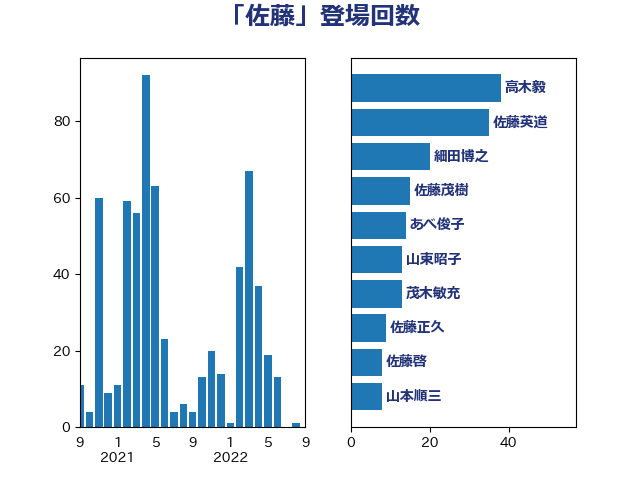

単語「佐藤」

| 高木毅 | 自由民主党 | 38 回 |
| 佐藤英道 | 公明党 | 35 回 |
| 細田博之 | 自由民主党 | 20 回 |
| 佐藤茂樹 | 公明党 | 15 回 |
| あべ俊子 | 自由民主党 | 14 回 |
| 山東昭子 | 自由民主党 | 13 回 |
| 茂木敏充 | 自由民主党 | 13 回 |
| 佐藤正久 | 自由民主党 | 9 回 |
| 佐藤啓 | 自由民主党 | 8 回 |
| 山本順三 | 自由民主党 | 8 回 |
| 山岡達丸 | 立憲民主党 | 7 回 |
| 足立康史 | 日本維新の会 | 7 回 |
| 逢坂誠二 | 立憲民主党 | 7 回 |
| 小沢雅仁 | 立憲民主党 | 6 回 |
| 横沢高徳 | 立憲民主党 | 6 回 |
| 橋本岳 | 自由民主党 | 6 回 |
| 青木一彦 | 自由民主党 | 6 回 |
| 大塚耕平 | 国民民主党 | 5 回 |
| 山本香苗 | 公明党 | 5 回 |
| 杉本和巳 | 日本維新の会 | 5 回 |
| 海江田万里 | 立憲民主党 | 5 回 |
| 石井章 | 日本維新の会 | 5 回 |
| 豊田俊郎 | 自由民主党 | 5 回 |
| 吉田宣弘 | 公明党 | 4 回 |
| 山口俊一 | 自由民主党 | 4 回 |
| 山崎正恭 | 公明党 | 4 回 |
| 川田龍平 | 立憲民主党 | 4 回 |
| 有村治子 | 自由民主党 | 4 回 |
| 林芳正 | 自由民主党 | 4 回 |
| 熊谷裕人 | 立憲民主党 | 4 回 |
| 笠井亮 | 日本共産党 | 4 回 |
| 西村智奈美 | 立憲民主党 | 4 回 |
| 足立敏之 | 自由民主党 | 4 回 |
| 金田勝年 | 自由民主党 | 4 回 |
| 馬場成志 | 自由民主党 | 4 回 |
| 鶴保庸介 | 自由民主党 | 4 回 |
| 黄川田仁志 | 自由民主党 | 4 回 |
| 三ッ林裕巳 | 自由民主党 | 3 回 |
| 佐藤信秋 | 自由民主党 | 3 回 |
| 古屋範子 | 公明党 | 3 回 |
| 吉川ゆうみ | 自由民主党 | 3 回 |
| 平木大作 | 公明党 | 3 回 |
| 斉藤鉄夫 | 公明党 | 3 回 |
| 斎藤嘉隆 | 立憲民主党 | 3 回 |
| 木原誠二 | 自由民主党 | 3 回 |
| 渡辺博道 | 自由民主党 | 3 回 |
| 石橋通宏 | 立憲民主党 | 3 回 |
| 篠原豪 | 立憲民主党 | 3 回 |
| 高良鉄美 | 無所属 | 3 回 |
| 麻生太郎 | 自由民主党 | 3 回 |
| 上田清司 | 国民民主党 | 2 回 |
| 中根一幸 | 自由民主党 | 2 回 |
| 伊佐進一 | 公明党 | 2 回 |
| 伊東良孝 | 自由民主党 | 2 回 |
| 伊波洋一 | 無所属 | 2 回 |
| 古賀篤 | 自由民主党 | 2 回 |
| 嘉田由紀子 | 無所属 | 2 回 |
| 坂本哲志 | 自由民主党 | 2 回 |
| 大西健介 | 立憲民主党 | 2 回 |
| 室井邦彦 | 日本維新の会 | 2 回 |
| 宮沢洋一 | 自由民主党 | 2 回 |
| 小沼巧 | 立憲民主党 | 2 回 |
| 小西洋之 | 立憲民主党 | 2 回 |
| 尾辻秀久 | 無所属 | 2 回 |
| 山田宏 | 自由民主党 | 2 回 |
| 山際大志郎 | 自由民主党 | 2 回 |
| 平口洋 | 自由民主党 | 2 回 |
| 打越さく良 | 立憲民主党 | 2 回 |
| 新妻秀規 | 公明党 | 2 回 |
| 新谷正義 | 自由民主党 | 2 回 |
| 本村伸子 | 日本共産党 | 2 回 |
| 根本匠 | 自由民主党 | 2 回 |
| 森屋宏 | 自由民主党 | 2 回 |
| 江島潔 | 自由民主党 | 2 回 |
| 田畑裕明 | 自由民主党 | 2 回 |
| 石川大我 | 立憲民主党 | 2 回 |
| 福岡資麿 | 自由民主党 | 2 回 |
| 福島伸享 | 無所属 | 2 回 |
| 秋野公造 | 公明党 | 2 回 |
| 細田健一 | 自由民主党 | 2 回 |
| 芳賀道也 | 国民民主党 | 2 回 |
| 赤羽一嘉 | 公明党 | 2 回 |
| 遠藤敬 | 日本維新の会 | 2 回 |
| 長坂康正 | 自由民主党 | 2 回 |
| 長谷川岳 | 自由民主党 | 2 回 |
| 青山大人 | 立憲民主党 | 2 回 |
| 青山繁晴 | 自由民主党 | 2 回 |
| 高橋はるみ | 自由民主党 | 2 回 |
| 高橋光男 | 公明党 | 2 回 |
| 高鳥修一 | 自由民主党 | 2 回 |
| ながえ孝子 | 無所属 | 1 回 |
| 上野賢一郎 | 自由民主党 | 1 回 |
| 中村裕之 | 自由民主党 | 1 回 |
| 中西健治 | 自由民主党 | 1 回 |
| 中西祐介 | 自由民主党 | 1 回 |
| 伊藤岳 | 日本共産党 | 1 回 |
| 伊藤渉 | 公明党 | 1 回 |
| 佐々木さやか | 公明党 | 1 回 |
| 佐藤公治 | 立憲民主党 | 1 回 |
| 加藤勝信 | 自由民主党 | 1 回 |
| 加藤鮎子 | 自由民主党 | 1 回 |
| 吉良州司 | 無所属 | 1 回 |
| 和田義明 | 自由民主党 | 1 回 |
| 國場幸之助 | 自由民主党 | 1 回 |
| 堀井巌 | 自由民主党 | 1 回 |
| 堀場幸子 | 日本維新の会 | 1 回 |
| 堤かなめ | 立憲民主党 | 1 回 |
| 太田房江 | 自由民主党 | 1 回 |
| 宮本周司 | 自由民主党 | 1 回 |
| 宮路拓馬 | 自由民主党 | 1 回 |
| 山下芳生 | 日本共産党 | 1 回 |
| 山口壯 | 自由民主党 | 1 回 |
| 岡田直樹 | 自由民主党 | 1 回 |
| 岩屋毅 | 自由民主党 | 1 回 |
| 岩谷良平 | 日本維新の会 | 1 回 |
| 岸信夫 | 自由民主党 | 1 回 |
| 島尻安伊子 | 自由民主党 | 1 回 |
| 島村大 | 自由民主党 | 1 回 |
| 杉尾秀哉 | 立憲民主党 | 1 回 |
| 東徹 | 日本維新の会 | 1 回 |
| 松下新平 | 自由民主党 | 1 回 |
| 松原仁 | 立憲民主党 | 1 回 |
| 松川るい | 自由民主党 | 1 回 |
| 柳ヶ瀬裕文 | 日本維新の会 | 1 回 |
| 柳本顕 | 自由民主党 | 1 回 |
| 柴山昌彦 | 自由民主党 | 1 回 |
| 永岡桂子 | 自由民主党 | 1 回 |
| 浅田均 | 日本維新の会 | 1 回 |
| 浜田聡 | NHK党 | 1 回 |
| 浦野靖人 | 日本維新の会 | 1 回 |
| 渡海紀三朗 | 自由民主党 | 1 回 |
| 渡辺周 | 立憲民主党 | 1 回 |
| 滝波宏文 | 自由民主党 | 1 回 |
| 田名部匡代 | 立憲民主党 | 1 回 |
| 田島麻衣子 | 立憲民主党 | 1 回 |
| 矢倉克夫 | 公明党 | 1 回 |
| 石井浩郎 | 自由民主党 | 1 回 |
| 石井準一 | 自由民主党 | 1 回 |
| 紙智子 | 日本共産党 | 1 回 |
| 緑川貴士 | 立憲民主党 | 1 回 |
| 緒方林太郎 | 無所属 | 1 回 |
| 舟山康江 | 国民民主党 | 1 回 |
| 船橋利実 | 自由民主党 | 1 回 |
| 若宮健嗣 | 自由民主党 | 1 回 |
| 荒井優 | 立憲民主党 | 1 回 |
| 菅義偉 | 自由民主党 | 1 回 |
| 菊田真紀子 | 立憲民主党 | 1 回 |
| 藤田文武 | 日本維新の会 | 1 回 |
| 西村康稔 | 自由民主党 | 1 回 |
| 西田実仁 | 公明党 | 1 回 |
| 赤澤亮正 | 自由民主党 | 1 回 |
| 辻清人 | 自由民主党 | 1 回 |
| 酒井庸行 | 自由民主党 | 1 回 |
| 里見隆治 | 公明党 | 1 回 |
| 野上浩太郎 | 自由民主党 | 1 回 |
| 野田佳彦 | 立憲民主党 | 1 回 |
| 金子恵美 | 立憲民主党 | 1 回 |
| 鎌田さゆり | 立憲民主党 | 1 回 |
| 長峯誠 | 自由民主党 | 1 回 |
| 長浜博行 | 無所属 | 1 回 |
| 音喜多駿 | 日本維新の会 | 1 回 |